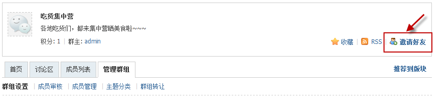
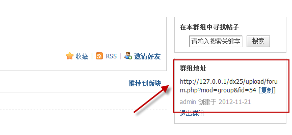
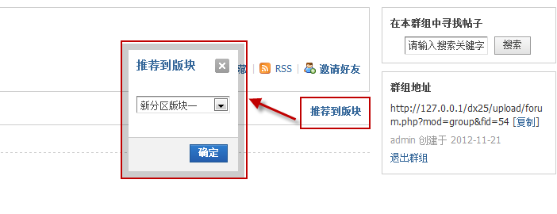
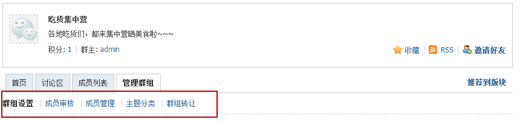

群组管理
系统提供了群组的推广和管理功能，下面我们详细来看：
邀请好友 ：邀请好友加入群组，点击邀好友，弹出好友页面，选中要发送邀请的好友，点击“发送邀请”按钮，等待好友确认即可；
群组推广 ：群主还能邀请一些站外的好友，可以把群组的链接发给QQ群等的朋友，让他们也来加入群组
推荐到版块 ：将群组推荐到论坛的版块，将会以推荐群组显示到主题列表区域上方
 群组设置 ：重新设置群组的名称、权限、简介等；
成员审核 ：若群组的加入方式设置为审核加入，则申请加入该群组的成员将在此显示，管理员可选通过或忽略
成员管理 ：选择成员，可以将其设为群主、设为副群主、明星成员、普通成员、踢出群组
主题分类 ：设置是否启用分类、发帖是否必须归类、是否在主题前显示分类名称，添加、删除、启用分类
群组转让 ：将群组转让给群组里的其成员，群组转让成功后，依然是该群的群主，但不再是群组创始人，可自由退出该群组，转让后无法直接恢复群，需被接收者主动操作才可以再次转回